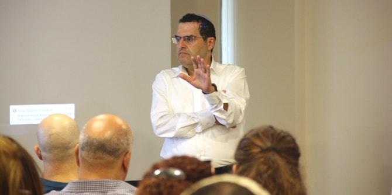
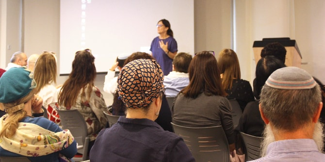

The Ministry of Education’s Southern Region superintendents came together on October 25, 2018, for a study day at the Mandel Center for Leadership in the Negev, led by Mandel faculty members Professor Smadar Ben-Asher and Israel Sorek, and by Oshra Schleifer and Ze’ev Eldar from the Southern Region of the Ministry of Education.
The day began with presentations by Ram Zehavi, the new director of the Education Ministry's Southern Region and a graduate of cohort 16 of the Mandel School for Educational Leadership, and Dr. Adi Nir-Sagi, director of the Mandel Center for Leadership in the Negev. Both expressed gratitude for the professional partnership between the two organizations, and for the study sessions, which are a source of inspiration for every community of learning. They also emphasized the importance of the humanities as a basis for the educational process.
Zehavi presented a lecture on change and improvement, in which he discussed the guiding values for formulating an organizational work plan. He also led a discussion among colleagues about the work of superintendents, and methods of leading improvements based on the educational research of Richard F. Elmore and Deanna Burney.

Dr. Moshe Meir and Israel Sorek led a discussion on the ethics of meaning, and spoke about the central ethical issues faced by superintendents in their work. Among other things, serious questions were raised regarding the right and ability of education professionals to take unequivocal stands on issues that are inherently open to interpretation and contextual thinking, as well as the courage necessary to do so. There was a fruitful discussion of the importance of innovation in every educational session, and of the constant struggle of humanist educators with the common assumption that “everything is relative and culturally dependent.”
The study day provided an opportunity for open professional dialogue among the superintendents, based on dilemmas and decisions they routinely face in their professional work.

{kind=link}
{kind=link}